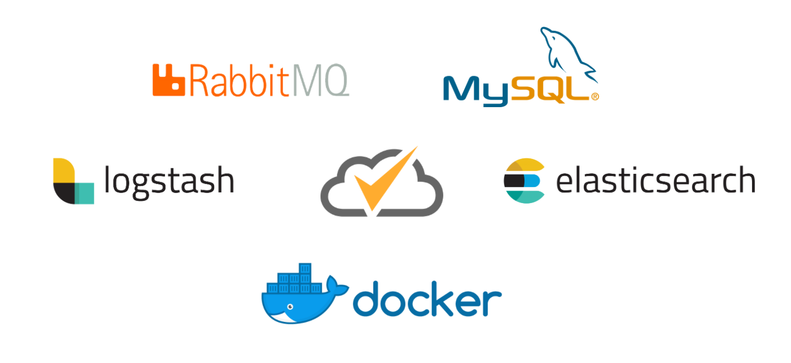

What is ElasTest?
ElasTest : a platform made by testers for testers
ElasTest is a platform aimed to ease end to end testing of distributed systems. One of the key features of the platform is the ability to show and analyze logs and metrics of all elements involved in an end to end test.
For example, suppose a typical three tier web application with a database. A basic e2e test has the following components: the test itself, web browser, web application and database. All those elements can generate logs and metrics of several types (CPU, memory, network packets…). When a test is executed using ElasTest, the tester can see all that monitoring information in the same graphical user interface and with advanced analysis features.
WARNING: ElasTest is currently in active development. This means that new features are constantly being added and unexpected bugs may appear.
ElasTest main features
Test management
Build your testing environment with the tools offered by ElasTest
Easily connect all the components wherever they are and run your tests in a few clicks
Metrics monitoring
Get useful information from all your components
Every test, web browser, database, application... generates logs and consumes computing resources. And knowing when and how they change can give you a huge advantage as a tester
Web browsers
Any browser. Of any version
As testers we know how hard it is to ensure that our applications work properly in all browsers and versions. ElasTest makes this an easy task
Log analyzer
A powerfool tool for finding what you want in the vast flood of logs
Gathering logs is only the first step. None of this would make sense if you couldn't dive into your logs with a powerful, intuitive and adaptative tool as ElasTest Log Analyzer
ElasTest core concepts
ElasTest is built around 3 main elements:
SuT
Software under Test: the tested software itself. ElasTest supports two kinds of SuTs:- Dockerized SuT: your software is hosted inside Docker container/s
- Docker image: SuT is packaged as a single docker image. The name of the image must be specified. If the docker image is not located in DockerHub, then the image name contains the FQDN of the registry.
- Docker compose: SuT is composed by several containers and is defined with a docker-compose.yml file.
- Deployed Sut: your software is already deployed somewhere on the cloud
- Manual instrumentation: ElasTest won't gather any monitoring information from the SuT unless you manually install some agents
- Automated instrumentation: let ElasTest configure your deployed SuT to send metrics and logs
TJob
Test Job: test to be executed against a piece of software (SuT). In a TJob several things have to be specified:- Environment needed to execute the tests: This is defined with a docker image that contains all tools used by the tests.
- How to retrieve and execute the tests: Specified as a set of commands written in bash that will be executed inside the environment defined before (docker container).
- The SuT against which tests are executed: That is, the SuT description. If the Sut is already deployed, it is necessary to specify how to reach it (usually with its IP). If the SuT lifecycle is managed by ElasTest, ElasTest needs to know how to deploy and undeploy the SuT. A TJob can be executed several times. That can be useful, for example, because SuT has changes and we want to verify that old features are still working. Or if we add more tests to the same TJob test repo, we can execute them against the SuT. For unit and integration tests, TJobs can manage themselves the deployment of the tested software (SuT not necessary). To learn more about this, you can check our unit test tutorial.
TSS
Test Support Services: services offered by ElasTest to ease the execution and analysis of TJobs. At the moment, only web browsers are provided, but in the near future ElasTest will offer other services as mobile devices emulators, IoT devices, security services and Big Data services.These three elements are the core concepts of ElasTest platform and they are also the components targeted by ElasTest platform.
In other words: SuT's, TJob's and TSS's are the modules that ElasTest can monitore and analyse for you. You can gather information and check logs and metrics for any SuT, TJob or TSS. To learn more check Monitoring section.
ElasTest technologies
